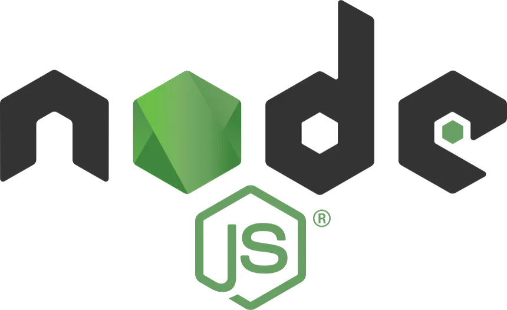

Node JS
Node.js es el entorno que permite ejecutar JavaScript en un servidor, y es lo que hace funcionar el backend de GamesOnMyLAN. Sin Node.js instalado, no es posible correr el proyecto, por lo que es el primer requisito a cumplir antes de la instalación.